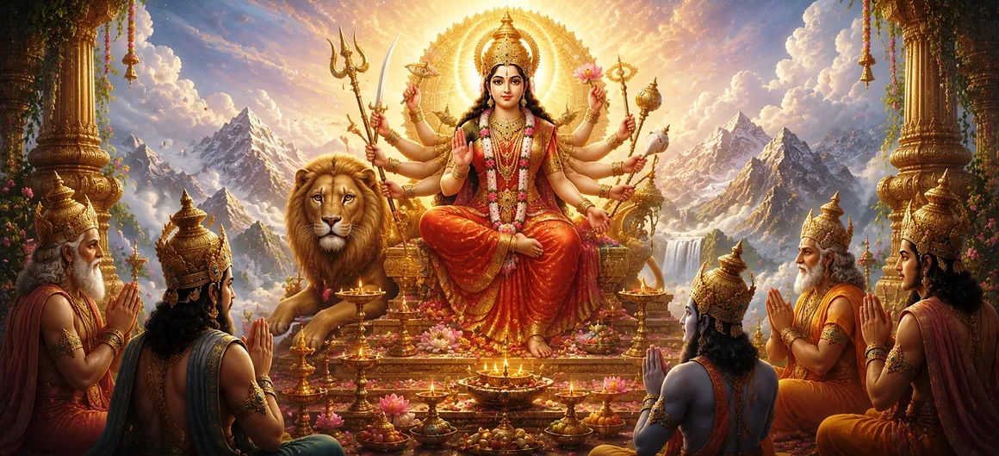

After their profound discussion regarding the future of creation, Lord Brahmā, Lord Viṣṇu, and the assembled gods realized that the success of their divine mission depended upon the grace of the Supreme Goddess. She was the eternal source of power, wisdom, protection, and cosmic balance. Understanding that no undertaking could succeed without her blessing, the gods turned their hearts toward Goddess Durgā and prepared to offer a sacred hymn in her praise.
The gods praised Goddess Durgā as the Divine Mother who sustains all existence. She is the source from whom all energies arise and into whom all powers ultimately return. Though worshipped through countless forms and names, she remains the one eternal Shakti who guides the destiny of the universe and protects all beings with her boundless compassion.
With folded hands and minds filled with devotion, the gods bowed before Goddess Durgā. They acknowledged that all victories, blessings, wisdom, and strength ultimately arise from her Divine presence. Knowing their own limitations, they sought refuge in the Mother of the universe and offered heartfelt praises filled with humility and faith.
The hymn glorified Goddess Durgā as the embodiment of all cosmic energies. The gods praised her as the power behind creation, preservation, and transformation. Without her energy, even the greatest deities would be unable to perform their divine duties. She was celebrated as the source of courage, protection, prosperity, and spiritual awakening.
The gods remembered countless occasions when Goddess Durgā had protected the righteous and destroyed the forces of darkness. Whenever Dharma was threatened, she manifested in powerful forms to restore balance and safeguard creation. Through their hymn, the gods expressed complete confidence in her compassion and protective grace.
The purpose of the hymn was not merely praise. The gods sought the blessings of Goddess Durgā for the successful fulfillment of the cosmic plan. They prayed that she would remove obstacles, guide their actions, and ensure that the events necessary for the welfare of the universe would unfold according to Divine will.
She protects devotees and upholds Dharma in all ages.
All divine energies originate from the eternal Goddess.
She responds to sincere devotion with grace and blessings.
The gods completed their sacred hymn with unwavering devotion. Their praises echoed throughout the heavens, carrying their hopes and concerns before the Divine Mother. Filled with sincerity and faith, they awaited her response, trusting completely in her wisdom and compassion.
This episode demonstrates the spiritual power of sincere prayer and praise. Even the gods, despite their greatness, approached the Divine Mother through humility and devotion. The Shiva Purana teaches that heartfelt worship creates a connection between the devotee and the Divine, opening the path for grace and guidance.
The hymn marked the beginning of a new phase in the cosmic plan. The gods had placed their trust in Goddess Durgā, and the Divine Mother would soon reveal her will. Through her guidance, the path toward the fulfillment of destiny would become clearer.
The sacred hymn has been offered, the Divine Mother has been invoked, and the gods now await her response. The next chapter will reveal the outcome of their prayers and the guidance that Goddess Durgā provides for the unfolding events of Sati Khanda.
The hymn to Goddess Durgā teaches that true strength comes from surrendering to the Divine Mother. Even the gods sought her grace before undertaking an important mission. This reminds devotees that humility, devotion, and faith open the door to divine guidance and protection.
This sacred hymn reveals the exalted position of Goddess Durgā within the cosmic order. The gods recognize her as the eternal source of energy, wisdom, protection, and spiritual awakening. Their praises affirm that all divine powers ultimately arise from the Supreme Mother and function through her grace. The hymn therefore serves not only as a prayer but also as a declaration of the Goddess’s universal sovereignty. :contentReference[oaicite:0]{index=0}
The gods were not seeking personal gain. Their prayer was motivated by concern for the welfare of creation and the successful fulfillment of the Divine plan. By turning to Goddess Durgā, they demonstrated that even the mightiest beings depend upon the grace of the Divine Mother when confronting challenges that affect the destiny of the universe.
Having offered their hymn with complete devotion, the gods now await the response of the Divine Mother. The stage has been set for the next development in the cosmic drama. The following chapter reveals how Goddess Durgā’s grace begins to guide events and how the divine plan moves closer to fulfillment through her wisdom and power.
"The Divine Mother is the source of all strength, wisdom, and protection. Those who seek her with humility and devotion receive guidance even in the most difficult moments of destiny."
The gods have completed their sacred hymn to Goddess Durgā and placed their hopes in her divine grace. Their prayers now begin to bear fruit as the cosmic plan advances. The next chapter reveals how Dakṣa Prajāpati receives a remarkable boon that will shape the future course of events and prepare the way for the birth of the Divine Mother as his daughter. :contentReference[oaicite:0]{index=0}